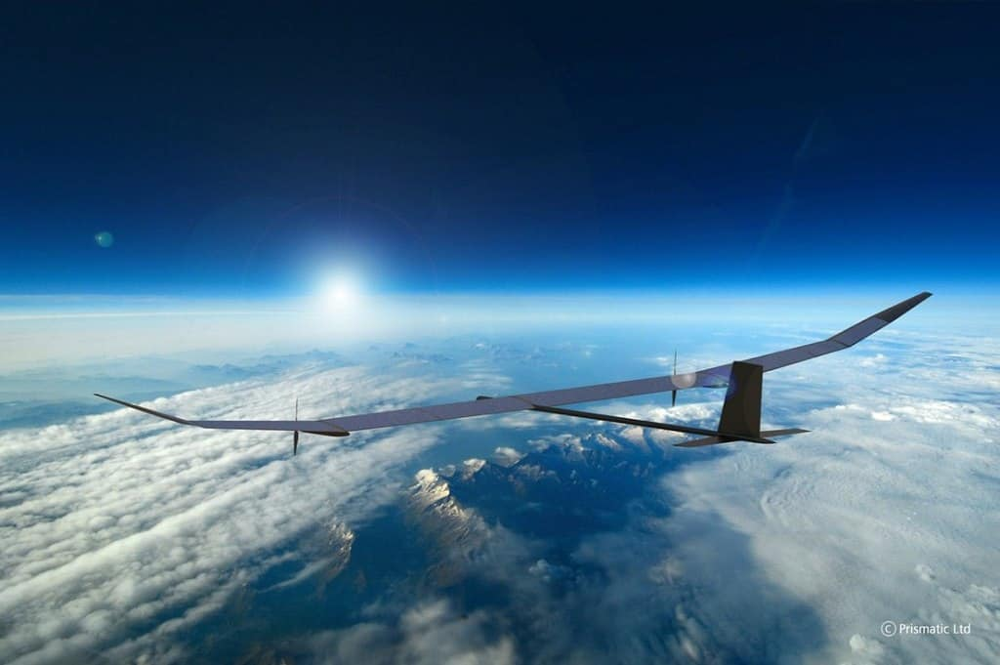
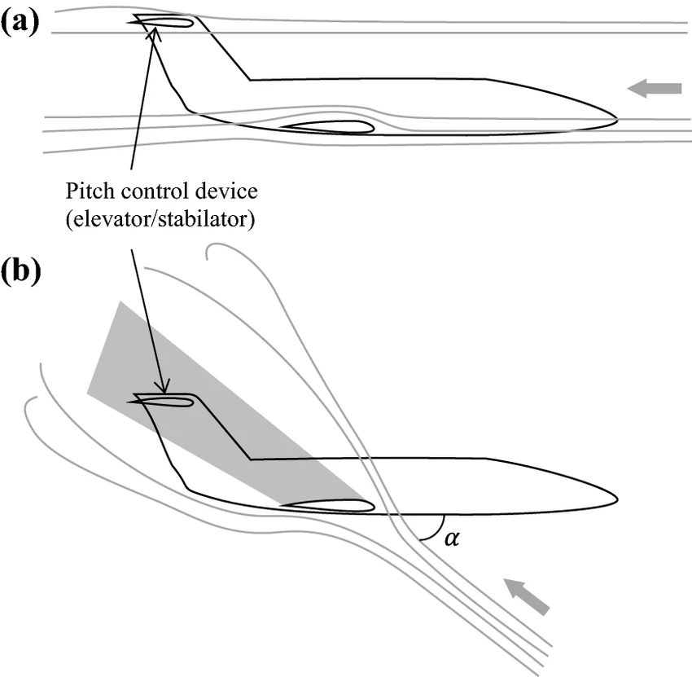
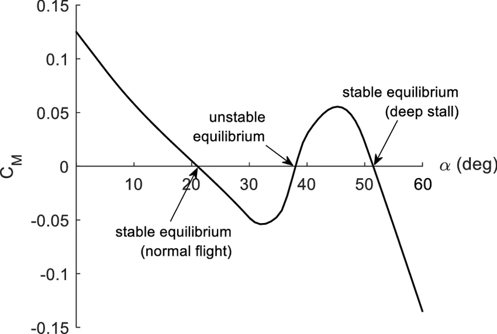
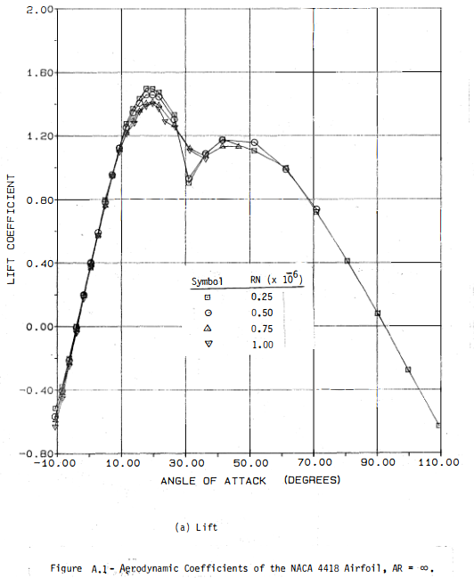
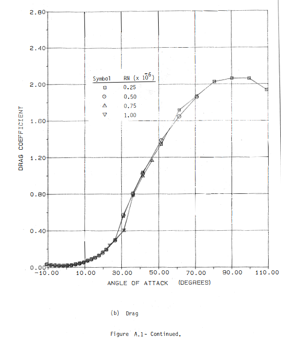
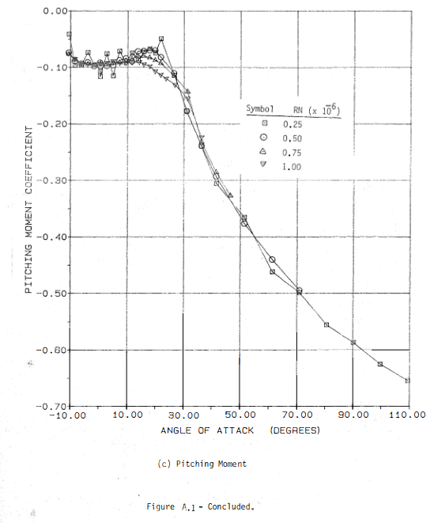

PhD Research · ISAE-Supaero, Toulouse · 2023–Present
Stall Implementation for Flexible Wings
Extending simplified ASWING stall modeling for high-altitude flexible aircraft recovery.

A High Altitude Long Endurance (HALE) aircraft — the class of flexible, autonomous vehicle this research targets. Source: Uniting Aviation.
Solar Impulse 2 — an example of a highly flexible, lightweight aircraft where aeroelastic effects are significant. Source: Pocket-lint.
Motivation: Stall on Flexible Aircraft
Most aerodynamic analysis — and most aircraft design — focuses on attached flow. Aircraft are typically optimized for cruise conditions, within the linear lift regime. Stall is something to be avoided, not studied in depth. Yet it remains a leading cause of aircraft mishaps, and for a specific class of vehicle it poses a particularly interesting and underexplored problem: flexible, high-altitude, long-endurance (HALE) aircraft operating autonomously.
Why does flexibility change things? A rigid aircraft, when perturbed, sees essentially the same airspeed along the entire span (induced velocity aside). A flexible aircraft, by contrast, undergoes structural vibrations that introduce local airspeed variations across the wing — different sections of the aircraft can see meaningfully different effective angles of attack at the same instant. This means stall onset, propagation, and recovery dynamics on a flexible airframe are genuinely different from the rigid case, and the existing literature on rigid aircraft stall cannot simply be transferred across.
The motivating scenario is straightforward and practically relevant: what happens if a HALE vehicle in autonomous cruise stalls? These aircraft operate at altitudes and in conditions where human intervention is limited or impossible. Understanding how stall develops on a flexible airframe — and how an autonomous control system might recover from it — requires a model. Building that model is what this project is about.
The Deep Stall Problem
Not all stall is created equal. A standard stall on a conventional aircraft is recoverable by pushing the nose down to reduce angle of attack and restore attached flow. Deep stall, however, is a qualitatively different phenomenon: at very high angles of attack, certain aircraft configurations — particularly those with T-tail arrangements — can enter a stable equilibrium in the fully separated flow regime. The lift curve develops a second stable zone at high alpha, and the aircraft can become trapped there, with standard recovery inputs proving ineffective.

Stall dynamics for a T-tail aircraft configuration — illustrating the flight states and pitch behavior leading into deep stall. Source: Lowemberg et al., ResearchGate.

CL(α) curve highlighting the stable deep stall equilibrium zone at high angle of attack — the region where conventional recovery inputs lose authority. Source: Lowemberg et al., ResearchGate.
Aerodynamic Data: Post-Stall Airfoil Behavior
Implementing stall within a flight mechanics simulator requires accurate post-stall aerodynamic data — specifically, how the lift, drag, and moment coefficients of an airfoil behave well beyond the linear regime. Classical wind tunnel datasets remain among the most reliable references for this. The data from Ostowari & Naik (1984) on NACA 4415 sections across varying aspect ratios provides a well-documented post-stall characterization used as a reference for this work.



Post-stall aerodynamic coefficient data from Ostowari & Naik (1984) for NACA 4415 sections — a key reference for populating the extended aerodynamic model. Source: Ostowari, C. and Naik, D., Post stall studies of untwisted varying aspect ratio blades with an NACA 4415 airfoil section, 1984. OSTI.
Approach: Extending ASWING
ASWING — the nonlinear aeroelastic solver used throughout my PhD — operates natively in the attached flow regime. Extending it to capture stall behavior requires modifying the aerodynamic model to handle the nonlinear, hysteretic lift curve characteristics that appear at high angles of attack, while keeping the overall framework fast enough to remain useful for control law development and simulation studies.
This is ongoing PhD research. Details beyond what is described here are not yet publishable, but the ASWING public repository at github.com/LeonardoAVONI/91_ASWING_Public collects related ASWING studies and utilities as they become available.